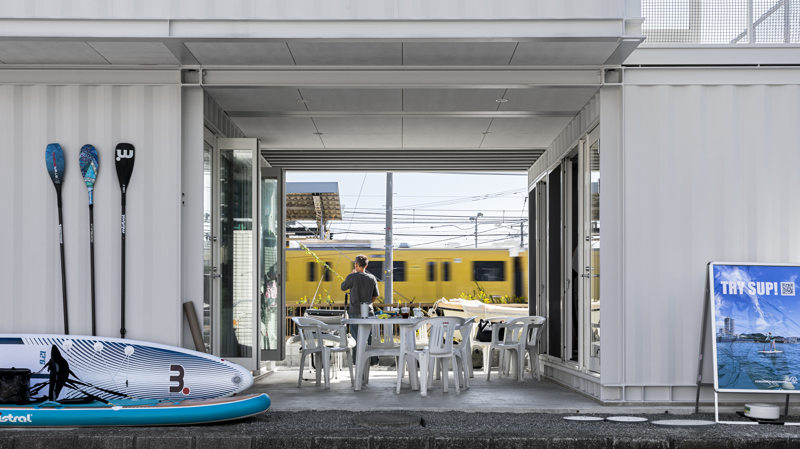
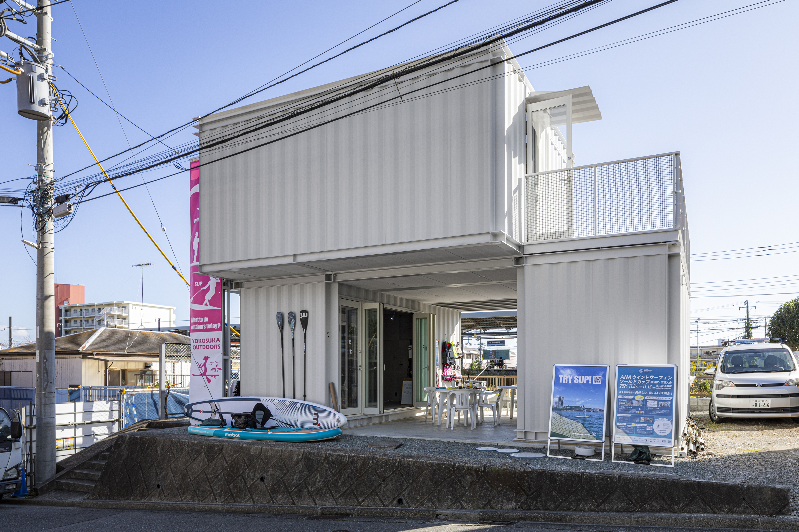
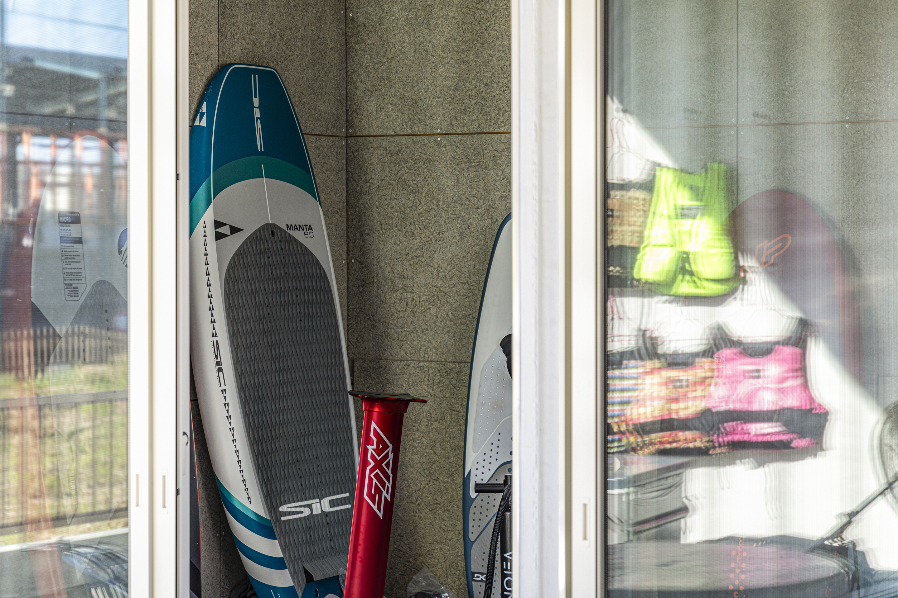
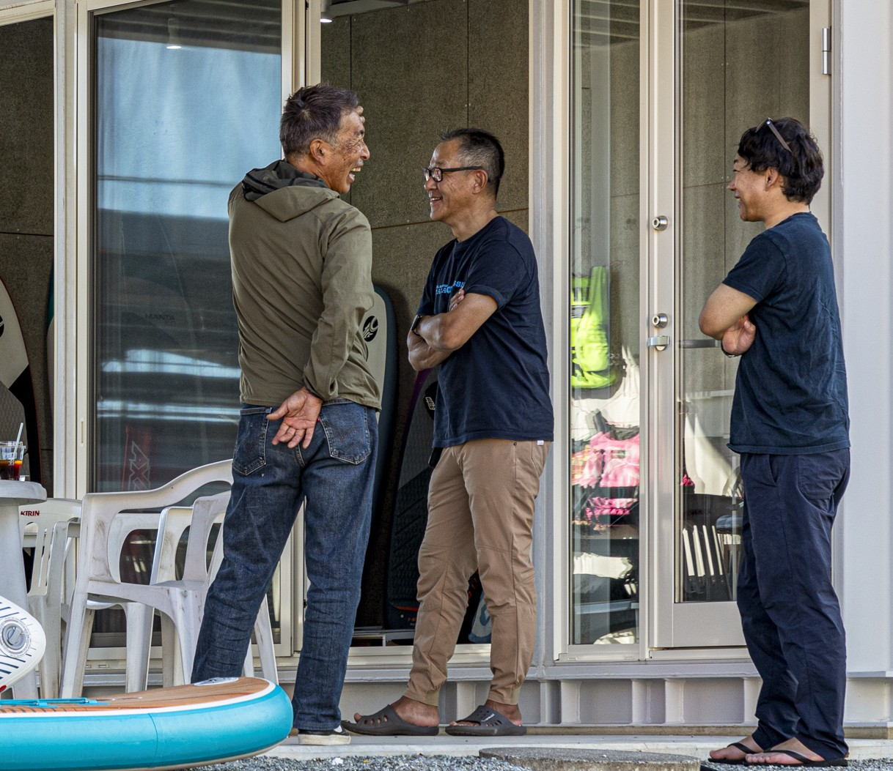

武田建築設計事務所
TAKEDA ARCHITECT & ASSOCIATES
↓ SCROLL
朝の光がキッチンに差し込む角度。
風が抜ける窓の位置。
季節ごとに変わる庭の景色。
暮らしのなかで人が毎日触れるものだからこそ、
建築には丁寧な思考が求められます。
同時に土地はオンリーワンの特性や風土を持っています。





わたしたちは、人の暮らしと土地の声に耳を傾け、10年後に「ここで良かった」と思える空間を編み出しています。
— TAKEDA ARCHITECT & ASSOCIATES